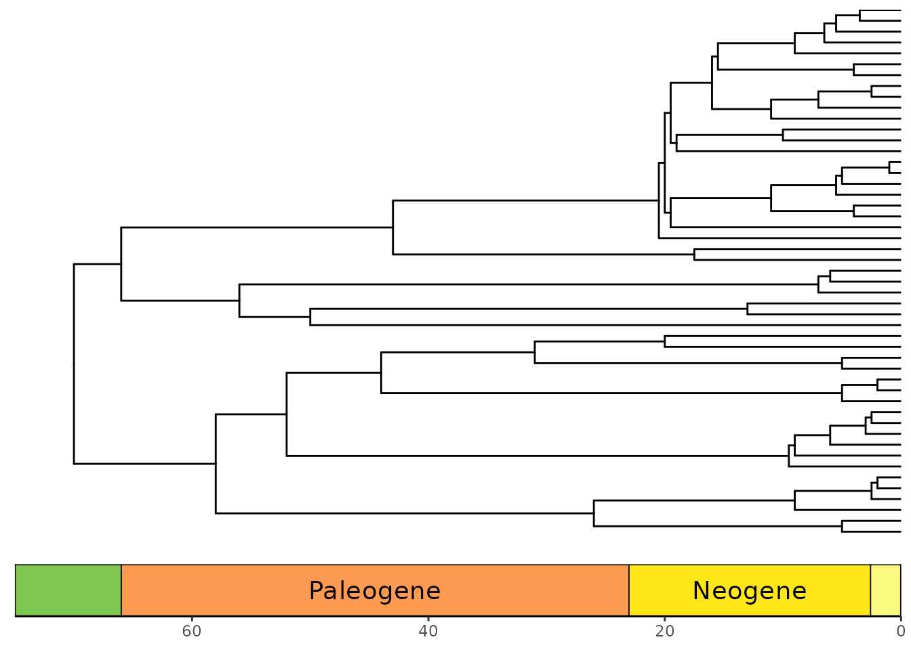
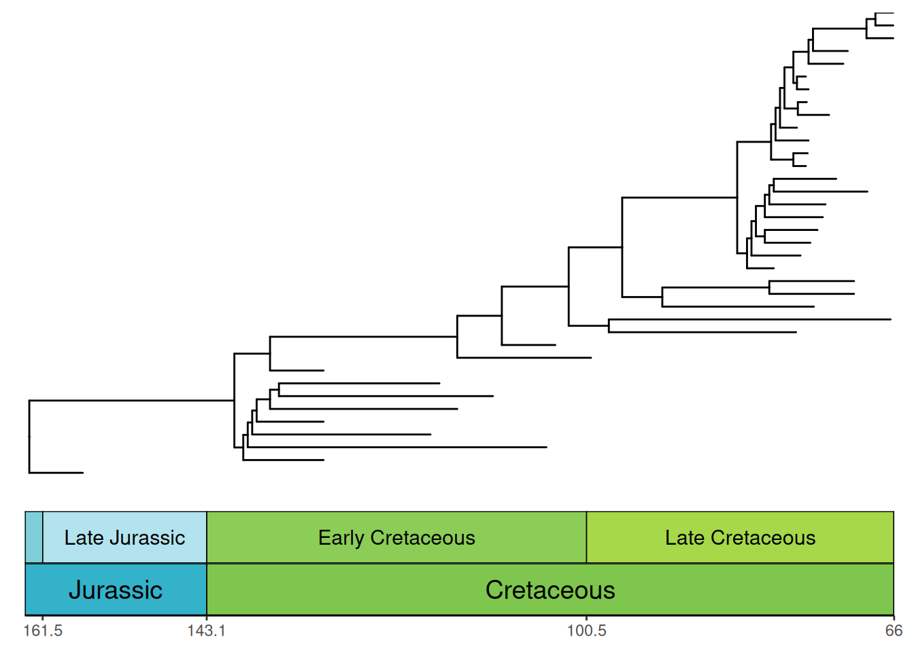
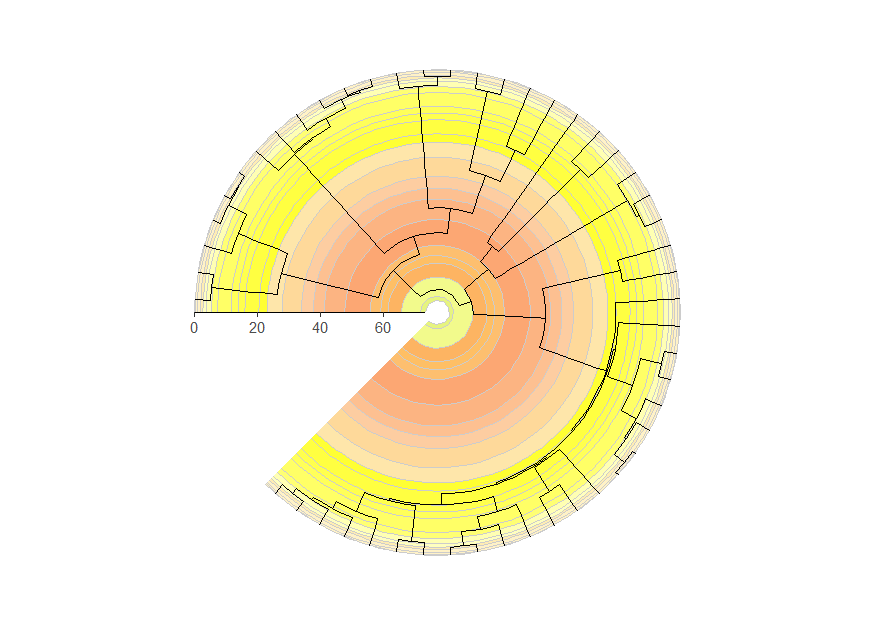
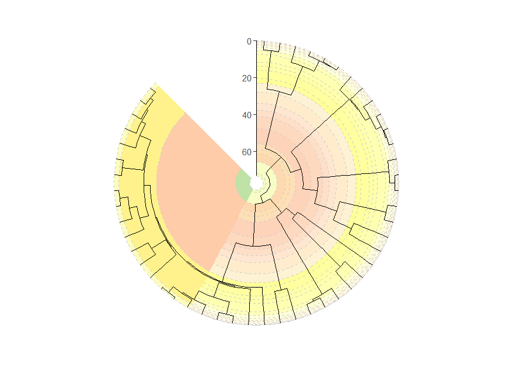
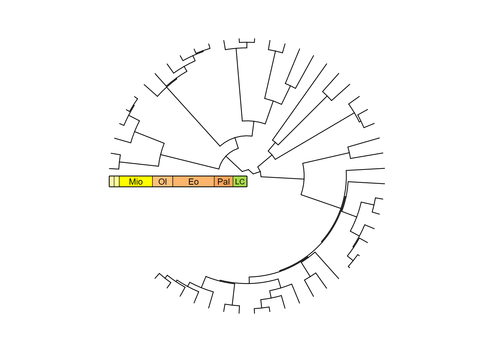
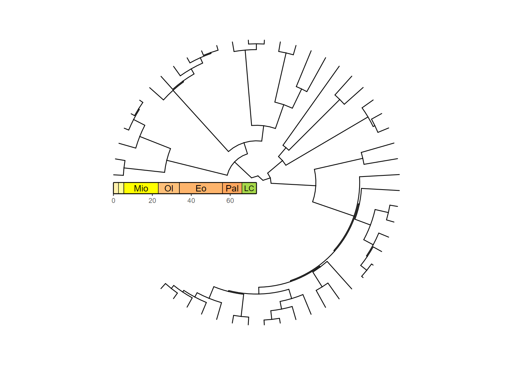
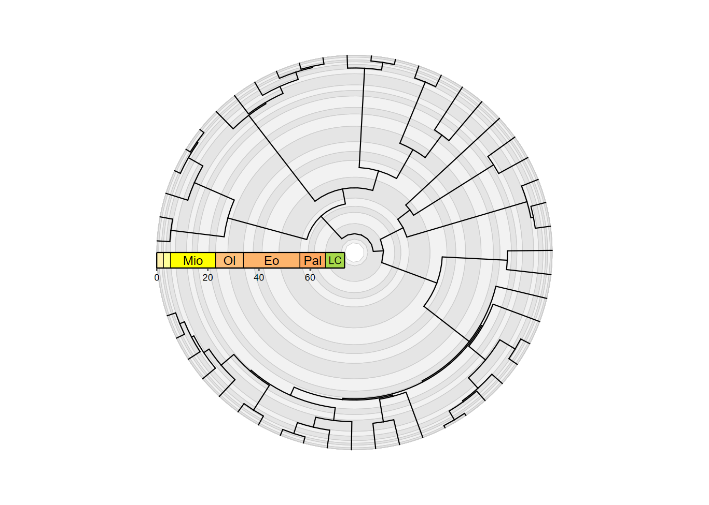
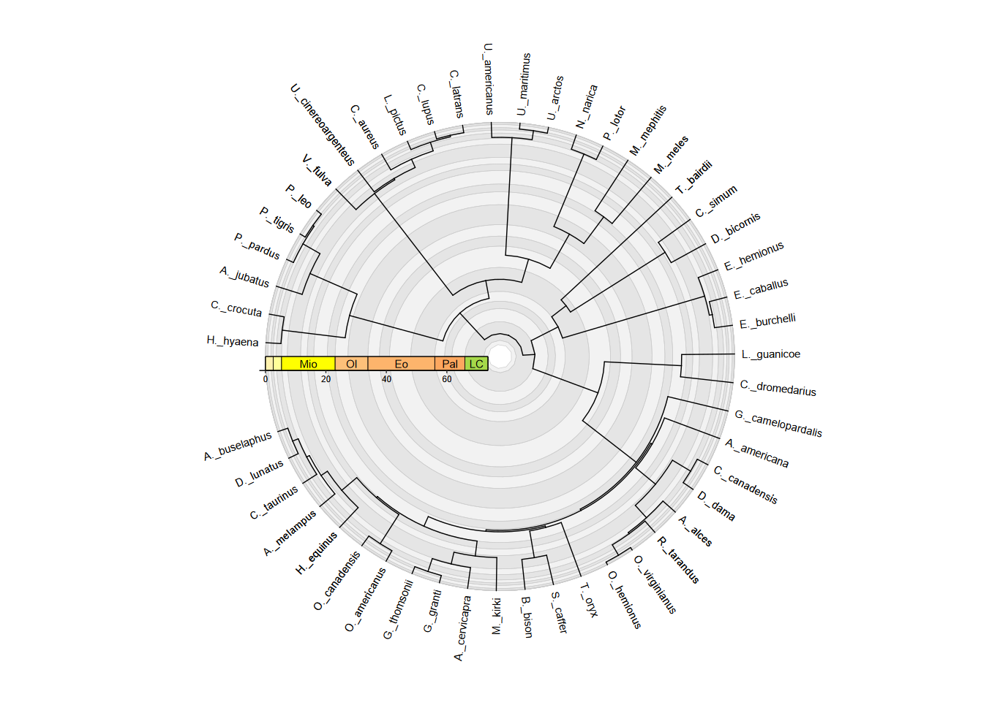

coord_geo() is also designed to work smoothly with
phylogenies that are plotted with the ggtree package.
First let’s load some important packages.
# Load deeptime
library(deeptime)
# Load other packages
library(ggplot2)
library(dplyr)
# Load ggtree
library(ggtree)
# Load phytools for some example data
library(phytools)
data(mammal.tree)
# Load paleotree for some example fossil data
library(paleotree)
data(RaiaCopesRule)Timescales and phylogenies
Now, let’s plot some phylogenies with timescales! Note that by
default the time axis increases toward the tips for trees plotted with
ggtree(), so you must use the revts() function
from ggtree
to change the x-axis values to increasing negative values. Note that
once you’ve done this, you will need to set neg = TRUE in
coord_geo(). Furthermore, any time axis limits that you set
will need to be negative. Here we also use the
scale_x_continuous() function to relabel the negative
x-axis values with positive labels.
p <- ggtree(mammal.tree) +
coord_geo(xlim = c(-75, 0), ylim = c(-2, Ntip(mammal.tree)),
neg = TRUE, abbrv = FALSE) +
scale_x_continuous(breaks = seq(-80, 0, 20), labels = abs(seq(-80, 0, 20))) +
theme_tree2()
## Warning: `aes_()` was deprecated in ggplot2 3.0.0.
## ℹ Please use tidy evaluation idioms with `aes()`
## ℹ The deprecated feature was likely used in the ggtree package.
## Please report the issue at <https://github.com/YuLab-SMU/ggtree/issues>.
## This warning is displayed once every 8 hours.
## Call `lifecycle::last_lifecycle_warnings()` to see where this warning was
## generated.
## Warning in fortify(data, ...): Arguments in `...` must be used.
## ✖ Problematic arguments:
## • as.Date = as.Date
## • yscale_mapping = yscale_mapping
## • hang = hang
## ℹ Did you misspell an argument name?
revts(p)
Phylogenies with only fossil taxa
Many phylogenies only have fossil taxa in them (i.e.,
non-ultrametric). These can be handled by coord_geo() by
using position_nudge() function. In most cases, you will
want to nudge the time axis values (in this case, the x-axis) by the
root.time of your phylogeny. Also, note that we have
modified plot.margin here to accommodate the stacked
timescale.
ggtree(ceratopsianTreeRaia,
position = position_nudge(x = -ceratopsianTreeRaia$root.time)) +
coord_geo(
xlim = c(-163.5, -66), ylim = c(-2, Ntip(ceratopsianTreeRaia)),
pos = list("bottom", "bottom"), skip = c("Paleocene", "Middle Jurassic"),
dat = list("epochs", "periods"), abbrv = FALSE,
size = list(4, 5), neg = TRUE, center_end_labels = TRUE
) +
scale_x_continuous(breaks = -rev(epochs$max_age),
labels = rev(epochs$max_age)) +
theme_tree2() +
theme(plot.margin = margin(7, 11, 7, 11))
## Warning in fortify(data, ...): Arguments in `...` must be used.
## ✖ Problematic arguments:
## • as.Date = as.Date
## • yscale_mapping = yscale_mapping
## • hang = hang
## • position = position_nudge(x = -ceratopsianTreeRaia$root.time)
## ℹ Did you misspell an argument name?
Circular phylogenies
Phylogenies can be plotted in a circular layout with a timescale
background using the coord_geo_radial() function. It works
just like coord_geo() and has many of the same arguments.
You can use the expand argument in
scale_x_continuous() to add space at either end of the
timescale. You can use the expand argument in
scale_y_continuous() to add space to either side of the
phylogeny to prevent the tips from overlapping with the pie
edges.
revts(ggtree(mammal.tree)) +
coord_geo_radial(dat = "stages") +
scale_x_continuous(breaks = seq(-60, 0, 20), labels = abs(seq(-60, 0, 20)),
expand = expansion(mult = c(0.05, 0))) +
scale_y_continuous(guide = NULL, expand = expansion(mult = c(0.01, 0.01))) +
theme_classic()
Circular phylogenies with “stacked” timescales
Timescales can even be “stacked” like with coord_geo(),
although the stacking occurs in a circular fashion. We also use the
prop, start, end, and
direction arguments to specify how the different timescales
are oriented and split within the polar space.
revts(ggtree(mammal.tree)) +
coord_geo_radial(
dat = list("stages", "periods"), alpha = .5, lty = "dashed",
prop = list(0.66, .34), start = 2 * pi, end = 1.75 * pi, direction = 1,
) +
scale_x_continuous(breaks = seq(-60, 0, 20), labels = abs(seq(-60, 0, 20)),
expand = expansion(mult = c(0.05, 0))) +
scale_y_continuous(guide = NULL, expand = expansion(mult = c(0.01, 0.01))) +
theme_classic()
Disclaimer
Note that coord_geo_radial() has been tested with the
plotting of ultrametric and non-ultrametric phylogenies with
ggtree::ggtree(), but it may have unexpected behavior when
combined with other functions from ggtree.
Furthermore, coord_geo_radial() may be useful (albeit
perhaps abstract) for plotting other types of data, but this has not
been investigated.
Axis timescales on radial phylogenies
coord_geo_radial() is quite different from
coord_geo(). Instead of adding a timescale to an axis, it
adds the timescale to the entire (or part of the) background of the
radial plot. In many cases, this may be useful. However, if you’re
annotating your plot with other text or shapes, these background colors
may be distracting. Perhaps you’d rather just have the look of
coord_geo() instead along the radial axis? Look no further
than guide_geo(). By default, ggplot uses
guide_axis() to style the radial axis of radial plots.
However, we can replace this with time intervals using the
guide_geo() function. Here’s a brief example using the same
mammal phylogeny from above:
revts(ggtree(mammal.tree)) +
coord_radial(theta = "y", start = -0.5 * pi, end = 1.25 * pi) +
scale_x_continuous(breaks = seq(-60, 0, 20), labels = abs(seq(-60, 0, 20)),
expand = expansion(mult = c(0.05, 0)),
guide = guide_geo("epochs", neg = TRUE, rot = -90,
size = "auto",
height = unit(1, "line"))) +
scale_y_continuous(guide = NULL, expand = expansion(mult = c(0.01, 0.01))) +
theme_classic()
You’ll notice that the tick marks and labels are now missing. This is
because guide_geo() only adds the intervals, not the rest
of the axis stuff. Don’t worry, we can add those in too using
guide_axis_stack() and guide_axis(). In most
cases you probably want to set the spacing to 0 (i.e.,
unit(0, "line")) so the different guides are glued
together.
revts(ggtree(mammal.tree)) +
coord_radial(theta = "y", start = -0.5 * pi, end = 1.25 * pi) +
scale_x_continuous(breaks = seq(-60, 0, 20), labels = abs(seq(-60, 0, 20)),
expand = expansion(mult = c(0.05, 0)),
guide = guide_axis_stack(guide_geo("epochs", neg = TRUE,
rot = -90, size = "auto",
height = unit(1, "line")),
guide_axis(),
spacing = unit(0, "line"))) +
scale_y_continuous(guide = NULL, expand = expansion(mult = c(0.01, 0.01))) +
theme_classic()
There they are! Hmm…after looking at all of these phylogenies with
background colors, this one looks quite bare. Fortunately, we can use
both coord_geo_radial() and
guide_geo() to make a phylogeny that really pops! However,
since we’re trying to avoid a distracting background, we’ll set the fill
colors to a light gray scale. We’ll also adjust the end
value for coord_geo_radial() to remove the empty space.
Note that if the start and end values result
in the same polar locations, the axis will be bumped to the margin, so
we use an end value that is just slightly smaller
than the start value. This leaves a very small gap, but
it’s covered by the guide_geo() boxes. Finally, note that
you can use guide_geo() within scale_
functions and also within the guides() function.
revts(ggtree(mammal.tree)) +
coord_geo_radial(dat = "stages", fill = c("grey90", "grey95"), end = 1.49 * pi) +
scale_x_continuous(breaks = seq(-60, 0, 20), labels = abs(seq(-60, 0, 20)),
expand = expansion(mult = c(0.05, 0))) +
scale_y_continuous(guide = NULL, expand = expansion(mult = c(0.01, 0.05))) +
theme_classic() +
guides(r = guide_axis_stack(guide_geo("epochs", neg = TRUE,
rot = -90, size = "auto",
height = unit(1, "line")),
guide_axis(),
spacing = unit(0, "line"))) +
theme(axis.text.y = element_text(color = "black"))
Very cool! Note that guide_geo() can actually be used
for any plot, but it basically does the same thing as
coord_geo() for non-radial plots and generally requires
more lines of code.
Tip labels on radial phylogenies
deeptime also provides a specialized geom,
geom_text_phylo(), for adding tip labels to phylogenies
plotted with ggtree(). It works similarly to
ggtree::geom_tiplab(), ggtree::geom_tiplab2(),
ggtree::geom_nodelab(), and
ggtree::geom_nodelab2(). However, unlike those geoms, this
geom is intended to work with all coordinate systems, including
coord_geo(), ggplot2::coord_radial(), and
coord_geo_radial(). For example, it can automatically
adjust the angle and justification of the text based on its position in
the plot. It can also be used to label only tips or only internal nodes.
Here’s a brief example using the same mammal phylogeny from above.
Notice that we use nudge_x = 2 to move the labels away from
the tips a bit. We also use plot.margin to add some space
around the plot so the labels aren’t cut off.
revts(ggtree(mammal.tree)) +
geom_text_phylo(nudge_x = 2) +
coord_geo_radial(dat = "stages", fill = c("grey90", "grey95"), end = 1.49 * pi) +
scale_x_continuous(breaks = seq(-60, 0, 20), labels = abs(seq(-60, 0, 20)),
expand = expansion(mult = c(0.05, 0))) +
scale_y_continuous(guide = NULL, expand = expansion(mult = c(0.01, 0.05))) +
theme_classic() +
guides(r = guide_axis_stack(guide_geo("epochs", neg = TRUE,
rot = -90, size = "auto",
height = unit(1, "line")),
guide_axis(),
spacing = unit(0, "line"))) +
theme(axis.text.y = element_text(color = "black"), plot.margin = margin(4,4,4,4, "lines"))
geom_text_phylo() inherits all of the arguments from
ggplot2::geom_text(), so you can modify the text size,
color, font, etc. as you would with any other text geom. You can also
use the angle, hjust, and vjust
aesthetics to further customize the text orientation and
justification.